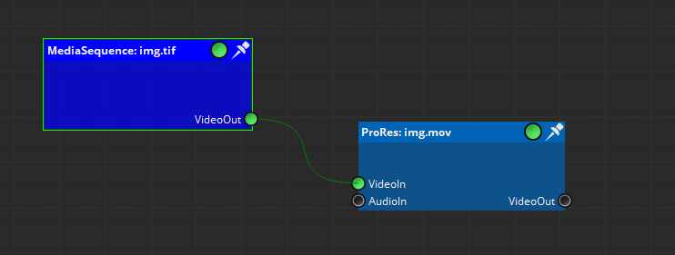
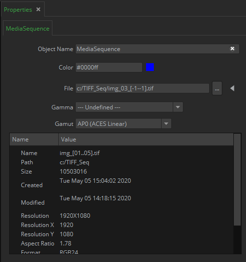
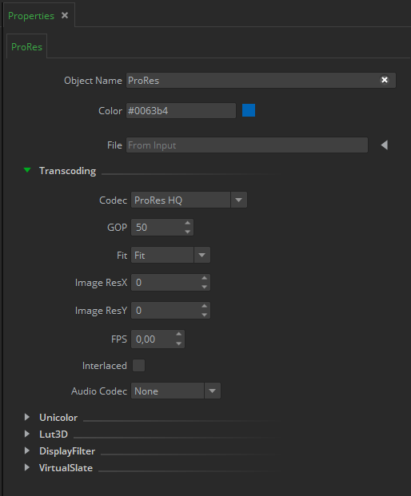
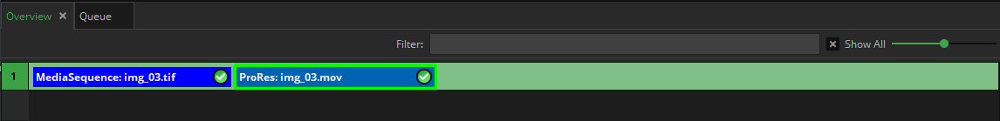

|
<< Click to Display Table of Contents >> Navigation: Mistika Workflows Interface > A first workflow example |
A basic workflow is going to be explained for demonstration purposes. In this case, we are going to transcode a TIFF sequence into a ProRes movie file.
First we load a TIFF input node as an input and a ProRes task node. We have the connectors and the name of the clips on top. Next to it, we have a small circle.

As you can see now we have the TIFF node in orange and the ProRes node in red. As shown in the color Interpretation hint , those colors mean that the node is not configured or not connected. We can read more information related with these issues in the Validation Inspector tab.
If we select the TIFF node, the Validation Inspector panel will tell us that we need to load something, as we still need to select the path to find our media. And if we click in the ProRes node we will get two messages, saying that it is not yet connected and that we need to select an output path.
Now, let's load some media to our TIFF node. Navigate into the folder and just load one frame. Now the node has the media path loaded. You can do the same thing by just loading the media in the Nodegraph by drag and dropping, obtaining the same result.
Now, you can connect the TIFF node to the ProRes node, and drop another folder on it to establish the output folder. Alternatively you can select the folder from the properties tab as well.

Now configure the ProRes node. You can find all the definable codec settings in the properties panel. In this example we are going to change only the codec setting to ProRes HQ.

Now that both node lights are green we can add this workflow to our Queue panel (for example, press the "Add all Ready to Queue" button). And finally click in the Play button (Start All) for starting the workflow processing.
Once it finish, if you go to the Output folder you should find the new ProRes file in there.
If we take a look next to the Queue we have the overview panel, which is a very useful graphic feature that shows all the workflows and all the nodes per workflow that there are in the project, with one workflow per line. (logically in this example we only have one line)
